Hjemmelagd hamburger eller cheeseburger. Selv Brede mente at dette var en av de beste burgerne han hadde smakt, og han har bodd i USA i 5 år!
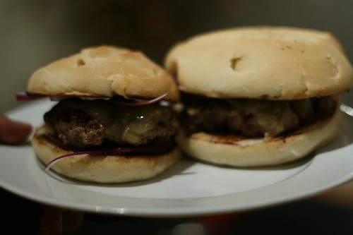
Hva er vel bedre enn en saftig burger på sommergrillen? Og hva er bedre enn en burger som ikke bare ER verdens beste, men som også er VERDENS ENKLESTE �? LAGE! I kid you not! I en periode sverget jeg til Davids karbonadedeigburgere med liquid smoke. De var gode, men disse er faktisk enda mye masse bedre. Men jeg må gi David kred for å ha fått meg til å innse at entrecote er verdens beste kjøtt. Det er det nemlig.
Uansett. Dere skjønner hvor dette bærer.
Burgere av entrecote!
Dyrt, sier du– Ja, en smule, men du kan også finne gode entrecoteskiver på tilbud. Eller så kan du handle dem til fast lavpris hos byen billigste/beste slakter et sted nederst på Grünerløkka (sier jeg navnet, vil det bli masse kø der, og så går prisene opp, og så er det ikke det beste lenger).
Tilbake til maten: Du kommer til å rulle deg på gulvet av latter når du leser hvor enkel denne oppskriften er. Men så kommer du til å felle en gledeståre når du tar første bit, for saftigere burger har du ALDRI smakt før. Og det er DU som har lagd dem. Ja, du!
Ok! Her er oppskriften…..
Ingredienser:
500 gram entrecote-kjøtt (til to svære burgere, eller tre middels)
Salt og pepper
Burgerbrød (gjerne hjemmelagd, som du ser på bildet over-men det er litt jobb, så kjøp deg noen gode burgerbrød, evt ciabattaer eller noe annet du liker)
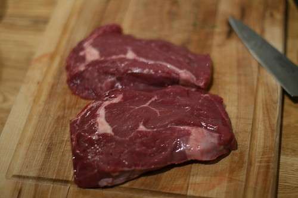
Begynn med entrecoten- des mer fett, jo bedre!- men fjern den største fettranden i midten..(du vet, den harde hvite mothefockern)
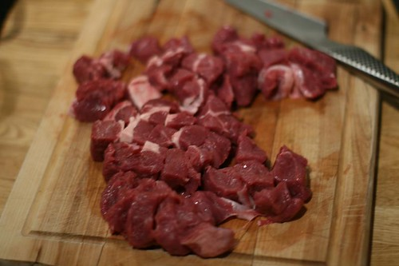
Skjær opp i 1-2 cm store biter
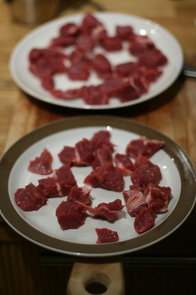
Plasser bitene spredt utover to tallerkener, og putt inn i fryseren i 20 min…(NEMLIG LITT VIKTIG AT DEN ER KALD)
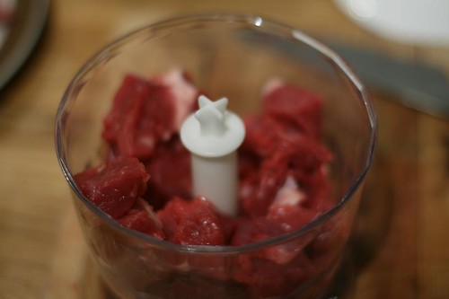
Kjør i en foodprosessor i pulserende drag…Det er viktig å ikke overmale kjøttet..
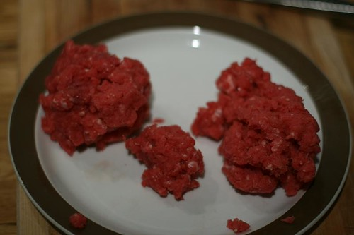
Slik bør det se ut etter 30 sek- En litt klumpete kjøttdeig
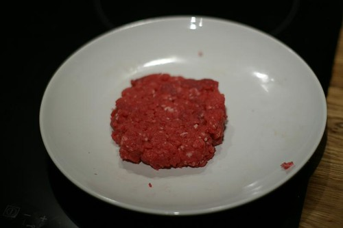
Form som en burger..– Ja, gjett hva! Du er faktisk nesten ferdig. Jeg sa det var enkelt.
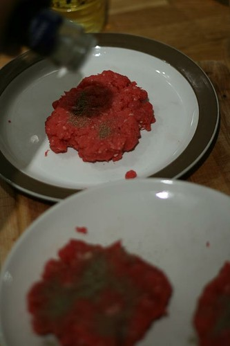
Salte og pepre- Jeg liker masse pepper ?
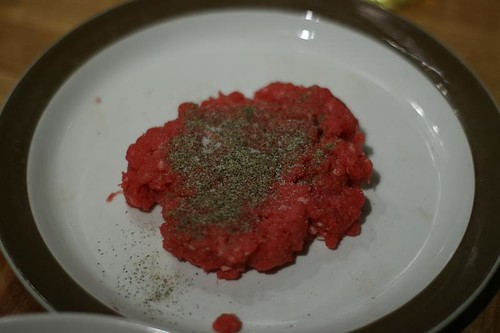
Damn, you look nice!
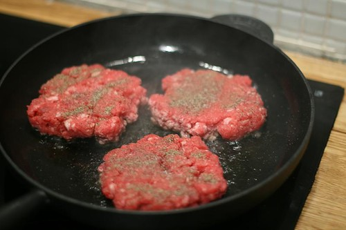
Det var ikke grillevær, derfor i stekepannen. Men disse blir enda bedre på grillen.
Steke i stekepanne: Bruk jernpanne, varm opp olje, og ha på medium-høy varme (gjerne mer høy enn medium), flipp første gang etter ca 4 min, og andre gang etter 2 min (så er de ferdige).
På grillen: Vel, legg på grillen og stek.
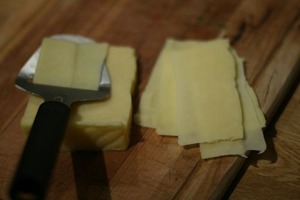
Mens de steker på første side, så gjør klar osten- gjerne litt blåmuggost også, hvis du har
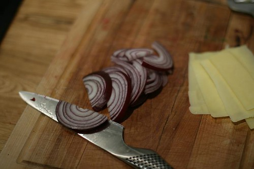
Kutt opp løk..
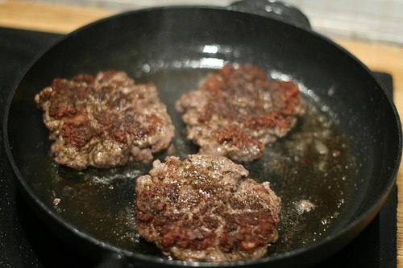
Hva? Ser de ikke gode ut?- Disse er nylig snudd…
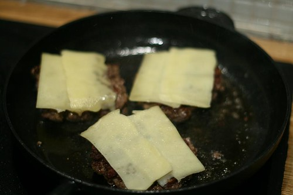
Så da må osten på…
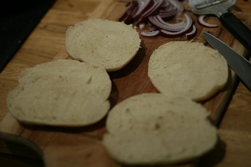
Gjør klar burgerbrødene…
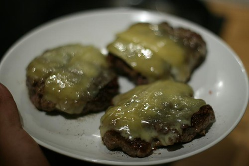
Burgerne er ferdige – nesten
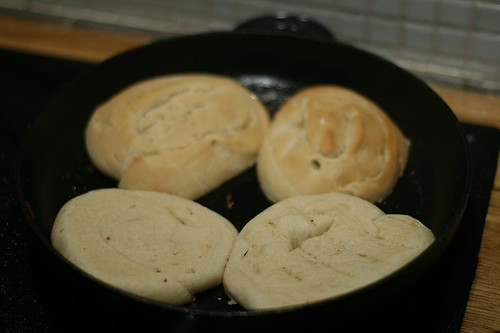
Stek burgerbrødene i burgerfettet (med innsiden ned), til de får en brun skorpe. Det som skjer, er at overflaten blir herdet, og sauser og slikt vil ikke renne gjennom og gjøre burgerbrødet bløtt, men crispy..
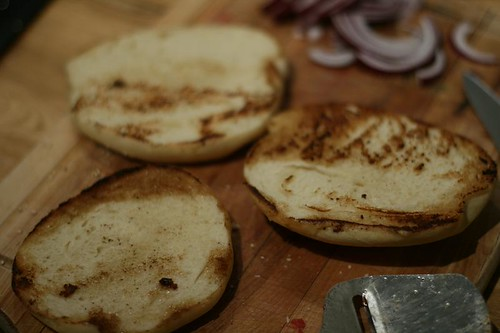
Ser ikke dette deilig ut? (ser dere at jeg brukte ostehøvelen som stekespade?)
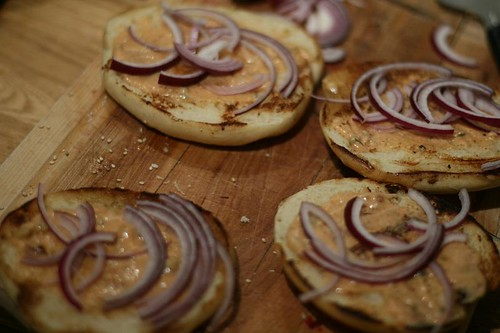
Jeg har jukset litt, og laget burgerdressing på si, og som jeg smørte ut under løken mens dere leste oppskriften
Voilá!
Som en bonustrack, skal jeg legge ved burgerdressingoppskriften. Men bare hvis du lover å legge igjen en kommentar dersom du prøver burgerne. Lover du? Ok. Her er'n:
Fabelaktiig burgersaus (noen kaller det hjemmelagd thousand island- dette er prikken over i-en som imponerer gjestene dine så mye at du vil motta stående applaus etter måltidet)
2 ss majones
1 ss ketchup
1/2 ts agurkmix
1/2 ts sukker
1/2 ts hvit eddik
1/4 ts pepper
BLAND ALT SAMMEN! FERDIG
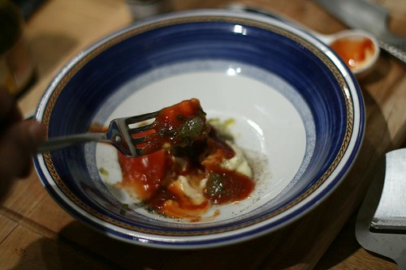
Fra guffe…
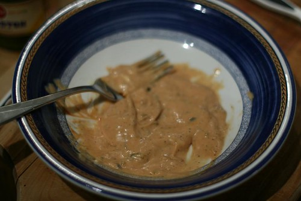
Til saus!
Som dere ser, har jeg servert veldig plaine burgere med saus og løk. Disse er så saftige at den enkle komposisjonen er en ren nytelse. Men, hey- hvis du vil pimpe burgern din med tomat og salat osv… Kjør på!
Jeg setter VELDIG stor pris på kommentarer, så legg igjen en kommentar i feltet under. Og spesielt hvis du har innspill til hvordan du lager burgere, slik at vi kanskje kan lage enda bedre burgere enn dette neste gang, selv om det ifølge Newtons lover faktisk er komplett umulig.
Og hvis du ikke er abonnent på denne på bloggen, som nesten 100 andre er, så anbefaler jeg deg å legge igjen e-postadressen din under, så får du en koselig melding neste gang jeg legger ut en oppskrift.
Bon appetit!